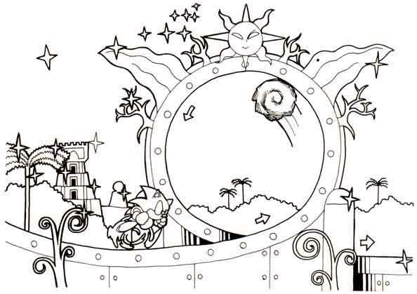

HISTÓRIA
Sonic The Hedgehog, ou apenas Sonic, é o mascote da SEGA, além de ser um dos grandes ícones do mundo dos games. Ele foi criado em 1990, durante um concurso interno com o intuito de criar o novo mascote da empresa, para substituir Alex Kidd, atual mascote da empresa na época. A história será dividida em algumas partes, sendo elas: SEGA x Nintendo e Criação do Ouriço.

Primeira parte: SEGA x Nintendo
A história de Sonic esta ligada diretamente ao Mega Drive, console lançado pela SEGA em Agosto de 1989 para concorrer contra o NES, da empresa rival Nintendo. Oque aconteceu após seu lançamento, é que o console fez muito sucesso nos Estados Unidos, ficando até conhecido pelo seu apelido de Genesis e conseguindo enfraquecer a Nintendo na época.
Porém como resposta, a Nintendo preparava para lançar seu novo console chamado de Super NES junto de um novo jogo de Mario, seu mascote. Foi com isso que o presidente da SEGA na época, Hayao Nakayama, vendo a necessidade de algo a mais, de um símbolo novo para a empresa,decidiu que a SEGA e o Mega Drive precisavam de um novo mascote para substituir o atual Alex Kidd e rivalizar com Mario.
Foi com isso em mente, que o designer de personagens Naoto Ohshima, o programador Yuji Naka e o designer Hirokazu Yasuhara se juntaram para criar o novo mascote da empresa.
Segunda parte: Criação do Ouriço
Durante a criação do novo mascote, surgiram muitas ideias e testes, como por exemplo: Um tatu, um cachorro, um personagem de pijama, um urso e até mesmo um coelho. O objetivo da equipe que estava desenvolvendo o novo mascote era algo bastante simples: Criar algo que fosse o "contrário" do Mario, enquanto Mario era mais gorducho, bigodudo e lento, o mascote novo da SEGA tinha que ter um visual mais ousado, e ser veloz, principalmente porquê o console da empresa na época, o Mega Drive, possuía alto poder de processamento.
Desenhos experimentais do novo mascote da SEGA.
Foi com essa ídeia que foi criado um ouriço com "cabelos" espetados, sendo inicialmente chamado de Mr. NeedleMouse. Apartir daí, o mascote foi tomando forma: Sua cor, no caso o azul, foi escolhida para combinar com a logo da SEGA na época, seus sapatos foram inspirados nos mesmo de Michael Jackson, porém sendo vermelhos em vez de pretos, pois Naoto Ohshima achava que daria um melhor contraste ao azul do personagem.
Arte conceitual da fase Starlight Zone.
Em seus primeiros esboços, Sonic era apresentado com presas, além de ser integrante de uma banda formada por outros animais ( no caso um crocodilo, coelho, macaco e uma galinha ), e com uma namorada humana chamada de Madonna. Porém uma equipe da Sega da América, retirou estes detalhes para a audiência americana, além de redesenharem o Sonic para uma versão mais ocidental, se aproximando muito do que conhecemos hoje. Na época a SEGA japonesa não havia gostado nem um pouco das mudanças, tanto que Madeline Schroeder teve que ir até o Japão para explicar que as mudanças eram necessárias. Porém depois o próprio Yuji Naka admitiu que as mudanças foram para melhor e disse que uma parte do sucesso do jogo vinha por parte delas.
Renderizações do personagem com conteúdos descartados.
E foi assim que o Sonic que conhecemos hoje foi criado, um personagem carismático, com grandes olhos expressivos e cheio de atitude, além de várias animações, como sua icônica animação de bater o pé no chão depois de ficar parado por alguns segundos,se tornando após isso eterno rival de Mario, emplacando uma sequência de títulos incríveis como Sonic 1, Sonic 2, Sonic CD e Sonic 3.